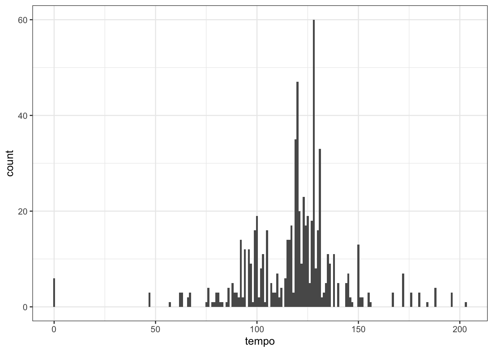

J Spotify Data
This appendix was inspired by Michael Mullarkey's tutorial, which you can follow to make beautiful dot plots out of your own Spotify data. This tutorial doesn't require you to use Spotify; just to create a developer account so you can access their data API with spotifyr.
library(usethis) # to set system environment variables## Warning: package 'usethis' was built under R version 4.1.2library(spotifyr) # to access Spotify## Warning: package 'spotifyr' was built under R version 4.1.2library(tidyverse) # for data wrangling
library(DT) # for interactive tables## Warning: package 'DT' was built under R version 4.1.2The package spotifyr has instructions for setting up a developer account with Spotify and setting up an "app" so you can get authorisation codes.
Once you've set up the app, you can copy the client ID and secret to your R environment file. The easiest way to do this is with edit_r_environ() from usethis. Setting scope to "user" makes this available to any R project on your computer, while setting it to "project" makes it only available to this project.
usethis::edit_r_environ(scope = "user")Add the following text to your environment file (don't delete anything already there), replacing the zeros with your personal ID and secret. Save and close the file and restart R.
SPOTIFY_CLIENT_ID="0000000000000000000000000000"
SPOTIFY_CLIENT_SECRET="0000000000000000000000000000"Double check that it worked by typing the following into the console. Don't put it in your script unless you mean to share this confidential info. You should see your values, not "", if it worked.
# run in the console, don't save in a script
Sys.getenv("SPOTIFY_CLIENT_ID")
Sys.getenv("SPOTIFY_CLIENT_SECRET")Now you're ready to get data from Spotify. There are several types of data that you can download.
J.1 By Artist
Choose your favourite artist and download their discography. Set include_groups to one or more of "album", "single", "appears_on", and "compilation".
gaga <- get_artist_audio_features(
artist = 'Lady Gaga',
include_groups = "album"
)Let's explore the data you get back. Use glimpse() to see what columns are available and what type of data they have. It looks like there is a row for each of this artist's tracks.
Let's answer a few simple questions first.
J.1.1 Tracks per Album
How many tracks are on each album? Some tracks have more than one entry in the table, so first select just the album_name and track_name columns and use distinct() to get rid of duplicates. Then count() the tracks per album. We're using DT::datatable() to make the table interactive. Try sorting the table by number of tracks.
gaga %>%
select(album_name, track_name) %>%
distinct() %>%
count(album_name) %>%
datatable(colnames = c("Albumn Name", "Number of Tracks"))Use count() to explore the columns key_name, mode_name, and any other non-numeric columns.
J.1.2 Tempo
What sort of tempo is Lady Gaga's music? First, let's look at a very basic plot to get an overview.
ggplot(gaga, aes(tempo)) +
geom_histogram(binwidth = 1)
What's going on with the tracks with a tempo of 0?
gaga %>%
filter(tempo == 0) %>%
select(album_name, track_name)| album_name | track_name |
|---|---|
| A Star Is Born Soundtrack | First Stop, Arizona - Dialogue |
| A Star Is Born Soundtrack | How Do You Hear It? - Dialogue |
| A Star Is Born Soundtrack | SNL - Dialogue |
| A Star Is Born Soundtrack | First Stop, Arizona - Dialogue |
| A Star Is Born Soundtrack | How Do You Hear It? - Dialogue |
| A Star Is Born Soundtrack | SNL - Dialogue |
Looks like it's all dialogue, so we should omit these. Let's also check how variable the tempo is for multiple instances of the same track. A quick way to do this is to group by album and track, then check the standard deviation of the tempo. If it's 0, this means that all of the values are identical. The bigger it is, the more the values vary. If you have a lot of data with a normal distribution (like a bell curve), then about 68% of the data are within one SD of the mean, and about 95% are within 2 SDs.
If we filter to tracks with SD greater than 0 (so any variation at all), we see that most tracks have a little variation. However, if we filter to tracks with an SD greater than 1, we see a few songs with slightly different tempo, and a few with wildly different tempo.
gaga %>%
# omit tracks with "Dialogue" in the name
filter(!str_detect(track_name, "Dialogue")) %>%
# check for varying tempos for same track
group_by(album_name, track_name) %>%
filter(sd(tempo) > 1) %>%
ungroup() %>%
select(album_name, track_name, tempo) %>%
arrange(album_name, track_name)| album_name | track_name | tempo |
|---|---|---|
| BORN THIS WAY THE TENTH ANNIVERSARY | The Edge Of Glory | 127.957 |
| BORN THIS WAY THE TENTH ANNIVERSARY | The Edge Of Glory | 124.004 |
| BORN THIS WAY THE TENTH ANNIVERSARY | Yoü And I | 127.073 |
| BORN THIS WAY THE TENTH ANNIVERSARY | Yoü And I | 124.428 |
| Cheek To Cheek | Sophisticated Lady | 75.221 |
| Cheek To Cheek | Sophisticated Lady | 138.475 |
| Joanne | Come To Mama | 179.911 |
| Joanne | Come To Mama | 179.911 |
| Joanne | Come To Mama | 119.962 |
| Joanne (Deluxe) | Come To Mama | 179.911 |
| Joanne (Deluxe) | Come To Mama | 119.962 |
You can deal with these in any way you choose. Filter out some versions of the songs or listen to them to see which value you agree with and change the others. Here, we'll deal with it by averaging the values for each track. This will also remove the tiny differences in the majority of duplicate tracks. Now we're ready to plot.
gaga %>%
filter(tempo > 0) %>%
group_by(album_name, track_name) %>%
summarise(tempo = round(mean(tempo)),
.groups = "drop") %>%
ungroup() %>%
ggplot(aes(x = tempo, fill = ..x..)) +
geom_histogram(binwidth = 4, show.legend = FALSE) +
scale_fill_gradient(low = "#521F64", high = "#E8889C") +
labs(x = "Beats per minute",
y = "Number of tracks",
title = "Tempo of Lady Gaga Tracks")
Can you see how we made the gradient fill for the histograms? Since the x-value of each bar depends on the binwidth, you have to use the code ..x.. in the mapping (not tempo) to make the fill correspond to each bar's value.
This looks OK, but maybe we want a more striking plot. Let's make a custom plot style and assign it to gaga_style in case we want to use it again. Then add it to the shortcut function, last_plot() to avoid having to retype the code for the last plot we created.
# define style
gaga_style <- theme(
plot.background = element_rect(fill = "black"),
text = element_text(color = "white", size = 11),
panel.background = element_rect(fill = "black"),
panel.grid.major.x = element_blank(),
panel.grid.minor.x = element_blank(),
panel.grid.major.y = element_line(colour = "white", size = 0.2),
panel.grid.minor.y = element_line(colour = "white", size = 0.2),
axis.text = element_text(color = "white"),
plot.title = element_text(hjust = 0.5)
)
## add it to the last plot created
last_plot() + gaga_style
J.2 By Playlist
You need to know the "uri" of a public playlist to access data on it. You can get this by copying the link to the playlist and selecting the 22 characters between "https://open.spotify.com/playlist/" and "?si=...". Let's have a look at the Eurovision 2021 playlist.
eurovision2021 <- get_playlist_audio_features(
playlist_uris = "37i9dQZF1DWVCKO3xAlT1Q"
)Use glimpse() and count() to explore the structure of this table.
J.2.1 Track ratings
Each track has several ratings: danceability, energy, speechiness, acousticness, instrumentalness, liveness, and valence. I'm not sure how these are determined (almost certainly by an algorithm). Let's select the track names and these columns to have a look.
eurovision2021 %>%
select(track.name, danceability, energy, speechiness:valence) %>%
datatable()What was the general mood of Eurovision songs in 2021? Let's use plots to assess. First, we need to get the data into long format to make it easier to plot multiple attributes.
playlist_attributes <- eurovision2021 %>%
select(track.name, danceability, energy, speechiness:valence) %>%
pivot_longer(cols = danceability:valence,
names_to = "attribute",
values_to = "rating")When we plot everything on the same plot, instrumentalness has such a consistently low value that all the other attributes disappear,
ggplot(playlist_attributes, aes(x = rating, colour = attribute)) +
geom_density()
You can solve this by putting each attribute into its own facet and letting the y-axis differ between plots by setting scales = "free_y". Now it's easier to see that Eurovision songs tend to have pretty high danceability and energy.
ggplot(playlist_attributes, aes(x = rating, colour = attribute)) +
geom_density(show.legend = FALSE) +
facet_wrap(~attribute, scales = "free_y", nrow = 2)Figure J.1: Seven track attributes for the playlist 'Eurovision 2021'
J.2.2 Popularity
Let's look at how these attributes relate to track popularity. We'll exclude instrumentalness, since it doesn't have much variation.
popularity <- eurovision2021 %>%
select(track.name, track.popularity,
acousticness, danceability, energy,
liveness, speechiness, valence) %>%
pivot_longer(cols = acousticness:valence,
names_to = "attribute",
values_to = "rating")ggplot(popularity, aes(x = rating, y = track.popularity, colour = attribute)) +
geom_point(alpha = 0.5, show.legend = FALSE) +
geom_smooth(method = lm, formula = y~x, show.legend = FALSE) +
facet_wrap(~attribute, scales = "free_x", nrow = 2) +
labs(x = "Attribute Value",
y = "Track Popularity")Figure J.2: The relationship between track attributes and popularity.
J.2.3 Nested data
Some of the columns in this table contain more tables. For example, each entry in the track.artist column contains a table with columns href, id, name, type, uri, and external_urls.spotify. Use unnest() to extract these tables. If there is more than one artist for a track, this will expand the table. For example, the track "Adrenalina" has two rows now, one for Senhit and one for Flo Rida.
eurovision2021 %>%
unnest(track.artists) %>%
select(track = track.name,
artist = name,
popularity = track.popularity) %>%
datatable()If you're a Eurovision nerd (like Emily), try downloading playlists from several previous years and visualise trends. See if you can find lists of the scores for each year and join the data to see what attributes are most related to points.
J.3 By Genre
Select the first 20 artists in the genre "eurovision". So that people don't spam the Spotify API, you are limited to up to 50 artists per request.
euro_genre <- get_genre_artists(
genre = "eurovision",
limit = 20,
offset = 0
)euro_genre %>%
select(name, popularity, followers.total) %>%
datatable()Now you can select the next 20 artists, incrementing the offset by 20, join that to the first table, and process the data.
euro_genre2 <- get_genre_artists(
genre = "eurovision",
limit = 20,
offset = 20
)bind_rows(euro_genre, euro_genre2) %>%
select(name, popularity, followers.total) %>%
datatable()J.3.1 Repeated calls
There is a programmatic way to make several calls to a function that limits you. You usually want to set this up so that you are waiting a few seconds or minutes between calls so that you don't get locked out (depending on how strict the API is). Use map_df() to automatically join the results into one big table.
# create a slow version of get_genre_artists
# delays 2 seconds after running
slow_get_genre_artists <- slowly(get_genre_artists,
rate = rate_delay(2))
# set 4 offsets from 0 to 150 by 50
offsets <- seq(0, 150, 50)
# run the slow function once for each offset
euro_genre200 <- map_df(.x = offsets,
.f = ~slow_get_genre_artists("eurovision",
limit = 50,
offset = .x))euro_genre200 %>%
select(name, popularity, followers.total) %>%
arrange(desc(followers.total)) %>%
datatable()J.4 By Track
You can get even more info about a specific track if you know its Spotify ID. You can get this from an artist, album, or playlist tables.
# get the ID for Born This Way from the original album
btw_id <- gaga %>%
filter(track_name == "Born This Way",
album_name == "Born This Way") %>%
pull(track_id)J.4.1 Features
Features are a list of summary attributes of the track. These are also included in the previous tables, so this function isn't very useful unless you are getting track IDs directly.
btw_features <- get_track_audio_features(btw_id)## tibble [1 x 18] (S3: tbl_df/tbl/data.frame)
## $ danceability : num 0.586
## $ energy : num 0.827
## $ key : int 11
## $ loudness : num -5.1
## $ mode : int 1
## $ speechiness : num 0.15
## $ acousticness : num 0.0037
## $ instrumentalness: int 0
## $ liveness : num 0.328
## $ valence : num 0.508
## $ tempo : num 124
## $ type : chr "audio_features"
## $ id : chr "6aDi4gOE2Cfc6ecynvP81R"
## $ uri : chr "spotify:track:6aDi4gOE2Cfc6ecynvP81R"
## $ track_href : chr "https://api.spotify.com/v1/tracks/6aDi4gOE2Cfc6ecynvP81R"
## $ analysis_url : chr "https://api.spotify.com/v1/audio-analysis/6aDi4gOE2Cfc6ecynvP81R"
## $ duration_ms : int 260253
## $ time_signature : int 4J.4.2 Analysis
The analysis gives you seven different tables of details about the track. Use the names() function to see their names and look at each object to see what information it contains.
btw_analysis <- get_track_audio_analysis(btw_id)## [1] "meta" "track" "bars" "beats" "sections" "segments" "tatums"metagives you a list of some info about the analysis.trackgives you a list of attributes, includingduration,loudness,end_of_fade_in,start_of_fade_out, andtime_signature. Some of this info was available in the previous tables.bars,beats, andtatumsare tables with the start, duration and confidence for each bar, beat, or tatum of music (whatever a "tatum" is).sectionsis a table with the start, duration, loudness, tempo, key, mode, time signature for each section of music, along with confidence measures of each.segmentsis a table with information about loudness, pitch and timbre of segments of analysis, which tend to be around 0.2 (seconds?)
You can use this data to map a song.
ggplot(btw_analysis$segments, aes(x = start,
y = loudness_start,
color = loudness_start)) +
geom_point(show.legend = FALSE) +
scale_colour_gradient(low = "red", high = "purple") +
scale_x_continuous(breaks = seq(0, 300, 30)) +
labs(x = "Seconds",
y = "Loudness",
title = "Loudness Map for 'Born This Way'") +
gaga_style
Figure J.3: Use data from the segments table of a track analysis to plot loudness over time.